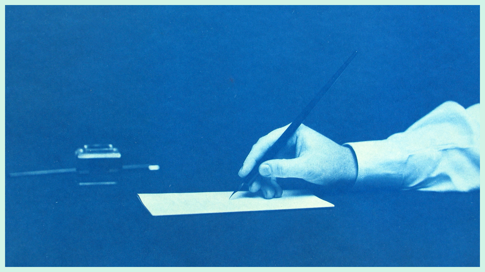

I turned 62 + Scattered Pages

I recently touched the age of sixty two. Lot of ideas floating around these days, which is natural, considering I retired from my day to day job a few full moons ago. Ample of free time to think and overthink... which led to this brilliant concept of meditative writing. I mean, it isn't anything new, writing has always been a form of meditation for me (and many others in my limited circle), but this time I wanted it to be properly documented and a little more organized.
All this technology around me and I still am as old school as ever. I write nine out of ten times using pen and paper; some days I genuinely feel scared about how obsolete that concept is getting for the newer generations, but there is such a calming sensation seeing your handwriting on a fresh piece of paper; and yes, I am well aware of the irony that exists, I expect these words to get digitized for my newly made website and substack (which I am told is the platform for writers these days), yet there is a good chance some of these notes came out first on paper, which is precisely where the tension lies.
So many interesting reflections and journal entries that I am writing down nowadays exist in a scattered mess of physical pages that will be difficult to find and comb through months from now on. So, website and a blog - phenomenal solution. I called in a favor that a friend of mine owed me (We call each other friends as if he is not almost 40 years my junior; a special acquaintance formed through work is probably a better description) and he helped me set up all the digital spaces. He also designed the website alongside the scattered pages logo, so special thanks to Static for that. Now I am not uneducated when it comes to technology, I admit that the initial setup was a bit above my area of knowledge, but I am capable enough to maintain and update these spaces.
I intend to keep these writings archived for primarily selfish reasons, that is, to have a streamlined access to these words; it is my wish to document them without any ulterior motive other than something to keep the mind busy with. I don't expect a lot of readers, nowadays I have seen the youth struggle with the attention span required for reading, it is a byproduct of the wealth of information that is accessible now. On the internet itself there is so much to read, so many articles, posts and books; I would count myself lucky if even a single individual sits through an entire page in this scattered diary of mine; I hope everyone who does so, finds something of value.
Now I am not going to restrict myself to write about just a specific niche or limit myself to my area of knowledge, which on a professional front is journalism; because I am retired and I wish to explore other areas of interest and intrigue. I expect myself to write about music, art, creativity, reflections about my life, lessons I have learned over the years, and the occasional ramblings about how the current state of the world is inferior to my younger days; I mean, which old man is complete without those?
Credits
Image photographed by Thomas Smillie